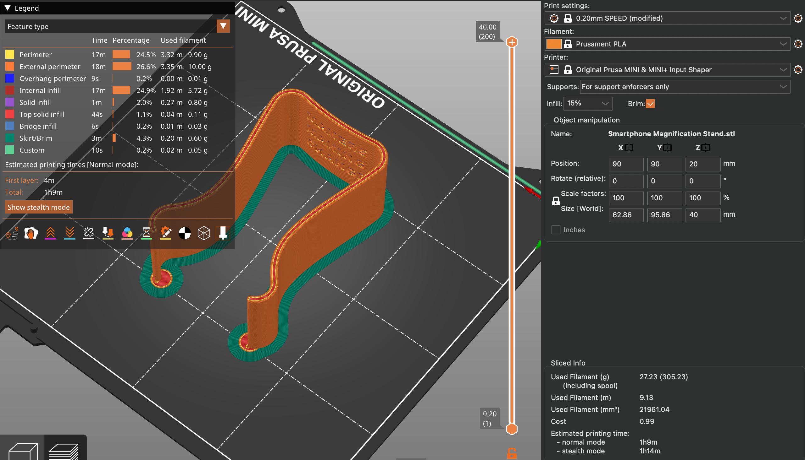
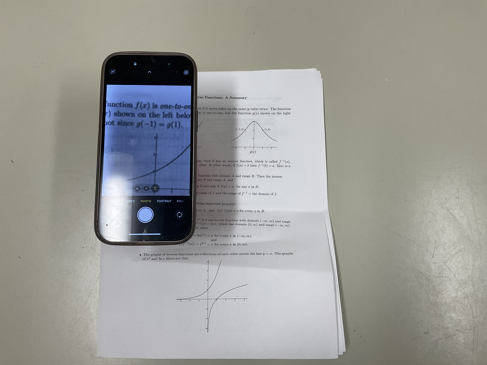

Open source assistive devices are tools or products designed to support accessibility needs, with their designs made freely available so they can be modified, improved, and shared by anyone. These devices are often created to provide affordable and customizable solutions for people with disabilities or physical challenges, allowing communities to adapt designs to better fit individual needs. For this project, I chose to print the Smartphone Magnification Stand, an open source assistive device created by the Neil Squire Society / Makers Making Change. This device is intended for individuals with low or impaired vision and works by holding a smartphone in place so the user can open the camera app and zoom in as needed, turning the phone into a simple and accessible magnification tool. The documentation for this device was clear and effective, providing sufficient instructions for printing and assembly, which made the process straightforward to follow.
In terms of improvements, I would suggest adding an optional accessory rather than changing the core design. Specifically, incorporating a 3D-printed phone pocket or recommending adhesive phone wallets or stick-on card holders would make the device more versatile. This addition could hold important items such as an ID or cards while also accommodating different phone sizes and larger phone cases. By offering this as an optional attachment, the design could remain simple and adaptable, allowing users who do not need the extra support to use the stand as is, while providing additional functionality for those who do.

Setting in PrusaSlicer

You can clearly see the difference and zoom
Project Rating
This is a strong and meaningful project because it clearly demonstrates how 3D printing can be used to improve accessibility and make everyday tasks easier for people with visual impairments. The design is simple, effective, and easy to reproduce, which aligns well with the goals of open-source assistive technology. Overall, the project highlights the real-world impact of 3D printing beyond prototyping and shows its potential to create practical, inclusive solutions.